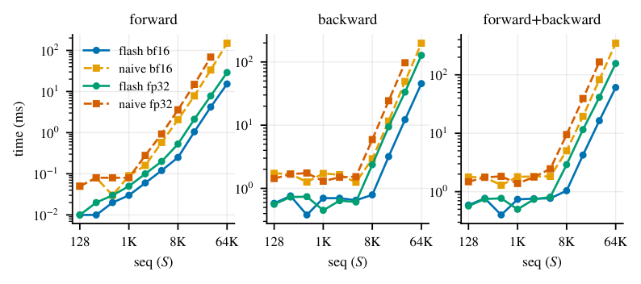
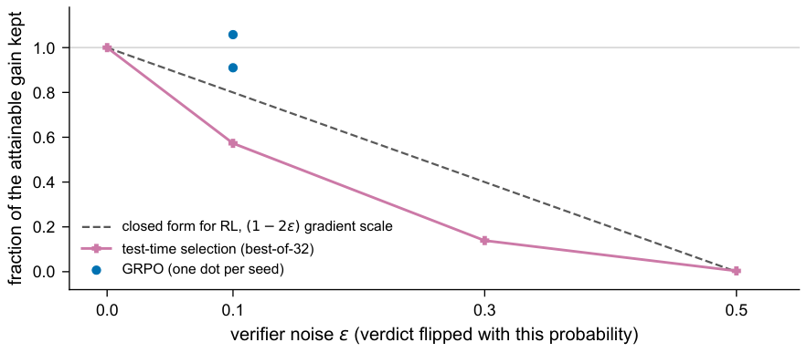
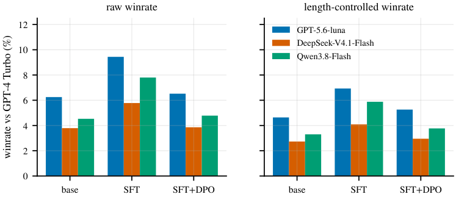
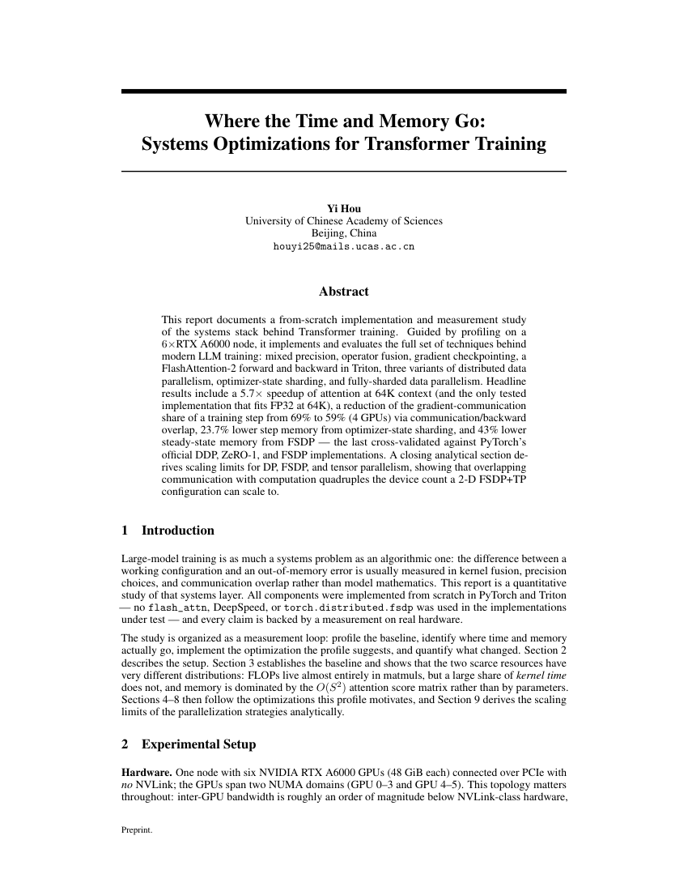

I'm Yi Hou (厚熠), a second-year Artificial Intelligence undergraduate at UCAS. I build language-model systems from scratch and report what the measurements say.
I came in through computer vision — a solo top-100 finish (of 3,668 registrations) in the 6th Jittor AI Challenge — then went down the stack through diffusion models, and now work across the full LLM pipeline: byte-level BPE, a decoder-only Transformer, Triton attention kernels, DDP / ZeRO-1 / FSDP, a Common Crawl filtering pipeline, and post-training with SFT / DPO / GRPO.
It's all public as llm-from-scratch — four projects, five technical reports — and I only publish numbers I can regenerate from the raw run logs.
Selected Results

5.7× faster attention at 64K context. Hand-written Triton FlashAttention-2 vs. naive attention (bf16) — and fp32 64K contexts run where naive OOMs.

A 10%-wrong verifier costs RL almost nothing. GRPO keeps 91–106% of its attainable gain (two seeds); best-of-32 selection keeps only 57%.

The judge outweighs the model. AlpacaEval win rate for the same three models spans 3.8–9.4% across frontier judges — and 26–33% under a local 8B judge.
News
- 2026.10Technical reports v1.0 released — five PDFs in the llm-from-scratch monorepo.
- 2026.04–07Top 100 of 3,668 registrations in the 6th Jittor AI Challenge (solo, point-cloud denoising).
- 2025.09Started B.Eng. in Artificial Intelligence at UCAS.
Selected Projects
LLM from Scratch
The full LLM stack in one monorepo — BPE → Transformer → Triton kernels → DDP / ZeRO-1 / FSDP → Common Crawl pipeline → SFT / DPO / GRPO. Five technical reports.
Diffusion from Scratch
UNet vs. DiT and ε-prediction vs. rectified flow, all measured: rectified flow won at every budget (best MNIST FID 0.88), and DDIM at 50 steps matches the 1,000-step ancestral FID within 0.8% at ~20× the speed.
Point Cloud Denoising
StraightPCF (CVPR 2024), solo re-implementation in Jittor — −51% Chamfer distance and −67% P2S error versus the noisy input; top 100 of 3,668 in the 6th Jittor AI Challenge.
Technical Reports
- A Transformer Language Model From Scratch: Implementation and Controlled Experiments
- Where the Time and Memory Go: Systems Optimizations for Transformer Training
- From Crawl to Corpus: Building, Auditing, and Evaluating a Common Crawl Filtering Pipeline
- Prompt Dominance and Asymmetric Verifier Costs: Empirical Ablations of GRPO at 1B Scale on GSM8K
- Instruction Tuning and Preference Optimization: Capability Trade-offs and Judge Dependence

Where the Time and Memory Go5.7× attention speedup at 64K context (Triton FA2); −43% memory from a from-scratch FSDP; Nsight profiles across 128M–3.4B-parameter models.
Notes
A verifier that's wrong 10% of the time: RL shrugs, best-of-N doesn't
The same verifier noise that barely dents GRPO training — 91–106% of attainable gain kept at a 10% flip rate — cuts best-of-32 selection to 57%. Why the asymmetry is structural rather than incidental.
Other Projects
lab-report
An agent skill (Claude Code) that automates the full loop from photos of handwritten lab records to a finished physics-lab report — verified transcription, uncertainty-corrected calculations and plots, and a Typst-compiled PDF. Open source.
ZhiyanNavigator
Backend for an LLM-powered paper-learning assistant built for the 2026 China International College Students' Innovation Competition — paper ingestion, proficiency assessment, study roadmap, card-by-card explanations, and self-check quizzes.